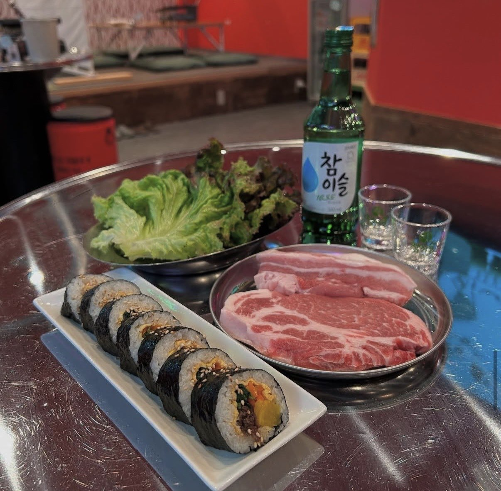

石山で本格韓国料理を楽しむなら。
名物テジカルビ・ヤンニョムチキン・キムチチゲなど、本場の韓国料理をカジュアルに楽しめる韓国料理店です。

📍 住所
滋賀県大津市粟津町9-27 2F（石山駅 徒歩5分）
⏰ 営業時間
火〜日：17:00〜23:00（月曜定休）
🔗 SNS
🍽️ 人気韓国料理
🍴 料理イメージ

📸 ギャラリー


名物テジカルビ・ヤンニョムチキン・キムチチゲなど、本場の韓国料理をカジュアルに楽しめる韓国料理店です。